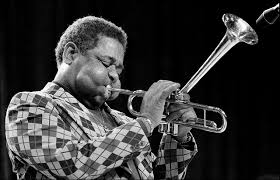
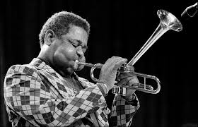

A Brief Overview of Jazz History
| Major Jazz Sub-genres. | Dixieland | Swing | Bop | Fusion/contemporary |
|---|---|---|---|---|
| Dates | 1911-1920's | 1935-1955 | 1955-1970 | 1970-1989 |
Throughout the last century, Jazz has become a overencompassing jargon-term for the evolution of contemporary music as it is known today.
It sources from the fundamentals in African percussive beats to chants and blues at the turn of the century in the Southern United States.
From there jazz developed into dixieland, a sub-genre directly taking aspects musicianly and instrumentaly both from improvisatory ragtime and brass-led Sousa marches.
Dixieland itself was named based off its location of origin, being New Orleans, Lousiana. Many well-known musicians came from this era, including Jelly-Roll Morton, Bix Beiderbecke, and louis Armstrong.
This style continued for decades and continued to be the staple sound of the New Orleans up to modern day. From this came the swing age, which is what is commonly reffered to now when the word "jazz" is uttered.
Swing, comprised of a "big band" setting of 4-5 members of each section, includes saxophones, trombones, and trumpets, as well as a full rythym section.
Many of these bands where led by exceptonal composers such as Duke Ellington, Benny Goodman, Glen Miller, Count Basie, and Stan Kenton, who derived a level of charisma and instrumental storytelling in the music with a style all their own.
Swing continued to be the sound of the roaring 20's and throughout the 30's and 40's. Well known standards included "Take the A Train", "Sleepwalker's Serenade", and "Sing, Sing, Sing."
Only with the entrance of rock and roll in 50's did jazz's full influence start to become shaken. However, in truth rock and what would alter manifest into pop was just a creative deviation of simpler blues progressions utilizing newer instrumentation and voice leading stemming from the strides made by jazz.
Most solos in Swing were of wholy melodic nature and many individual players fine-tuned their improvisation within the textures laid down by the accompanient.
Many of these player joined together in late-night session in the 50's and 60's and began to not just think of soloing as a purely melodic approach but rather based on the interplay of the chords themselves.
This began an entirely new part of jazz's history: Bop. Where it once upheld mainly by the enjoyment of the audience and the many dance halls played in, jazz took a turn towards more artistic attention.
Instead of being easier to dance to, bop was more of an improvisatory exploration. By creating flowing lines of notes and finding innovative ways to determine tonality with intervals, Bop proved to become one of the most rewarding style of music for the players at the time to learn to master.
Many of the greatest instrumentalist in jazz's history became known in this time, and although the innvoations of bop began as early as the 40's, it was actually in the late 50's and 60's most of its performers banded together. From Miles Davis, Thelonious Monk, Dexter Gordon, John Coltrane, to the true originiators of bop: Charlie Parker and Dizzy Gillespie, Bop is now what is mainly sudied by colegiate students and modern musicians alike as the art form of improvisational mastery.
Other deviations of jazz to come from this included Mambo, Latin-jazz, bossa-nova, avant-garde, and Fusion. The 60's and 70's funk explosion, based directly from jazz with an altered rythymic setup, saw the end of a purely new jazz art form and the beggining of everything yet to come being in someway beholdent to those who came before.
Many notable jazz musicians who performed reguralry in the 80's onward to today include Marsalis family, Herbie Hancock, Wayne Shorter, Joshua Redman, Maynard Ferguson, and the Brecker Brothers.
Players such as Wynton Marsalis and Wayne Shorter kept true to the original styles of jazz and gave homeage continually through their own musical creations and commentary. While conversely some of the greateast talents such as Maynard Ferguson, Michael Brecker, and Herbie Hancock inspired a whole new generation of players both seeded in jazz roots and more modern styles through their more commercialized tastes.
For an example of this, here is a performance of Maynard performing a Funk-fusion tune originally written by the band Weather Report on the Mike Douglas show:
Maynard on Birdland
Additionally, here is a more comprehensive list of great players to listen to in each era of jazz not already mentioned above:
- Dixieland
- King Oliver, Eddie Condon, Muggsy Spanier, Bud Freeman, Jimmy Mcpartland, Bobby Hatchett, James P. Johnson, and Sidney Betchet.
- Swing
- Artie Shaw, Ella Fitzgerald, Frank Sinatra, Cab Calloway, Gene Krupa, Buddy Rich, Lionel Hampon, Billie Holiday, Leester Young, Art Tatum, Jimmy Dorsey,
- Teddy Wilson, Chick Webb, Coleman Hawkins, Django Reinhardt, Jack Teargarden, Roy Eldridge, Cat Anderson, and Harry James.
- Bop
- Canonball Adderley, Freedie Hubbard, Clifford Brown, Lee Morgan, Stan Getz, Ornette Coleman, Donald Byrd, Roy Hargrove, Joe Henderson, Max Roach, Art Blakey, Sonny Rollins, Sonny Stitt, and Charles Mingus.
- Fusion/Modern
- Chuck Mangione, Doc Severinson, Nick Peyton, Wayne Bergeron, Eric Miyashiro, Randy Brecker, Joe Lovano, Kamasi Washington, Groover Washington Jr., Chick Corea, Clark Terry, Trombone Shorty, and Snarky Puppy.


 
